Fiche 04 -- Configuration du réseau
Configuration des interfaces réseau
Dans une configuration usine, la première interface du pare-feu SNS 210 est nommée « OUT » (qui correspond à l'interface WAN sur un boitier physique) et la seconde* « IN ». Les suivantes (3 à 7) sont des ports de commutateurs. La dernière interface « DMZ1 » (qui correspond à l'interface DMZ sur un boitier physique 210) sert à connecter le pare-feu sur une zone démilitarisée. *
L'interface « OUT » est une interface externe, utilisée pour connecter le pare-feu SNS à internet (WAN) et le reste des interfaces sont internes et servent principalement à connecter le pare-feu SNS à des réseaux locaux. La distinction interface interne/externe permet de se protéger contre les attaques d'usurpation d'adresse IP.
Attention
Pour accéder à l'interface d'administration du pare-feu SNS, il faut connecter votre machine sur une interface interne (in, dmz1, dmz2, etc) **sous peine d'être détecté comme tentative d'intrusion qui nécessite le redémarrage du firewall.
Attention
Dans ce cas, on aura un message « forbidden » sur le navigateur, on peut déconnecter le câble (faisable aussi en virtuel en désactivant la carte), changer son IP et se reconnecter à une autre interface interne sans redémarrage.*
La configuration des interfaces s'effectue dans le menu Configuration / Réseau / Interfaces, en faisant « sortir » les interfaces Ethernet de l'interface bridge créée par défaut sur le boîtier.
- Sélectionner Configuration / Réseau / Interfaces.
Configuration par défaut avec bridge

Configuration en mode routeur
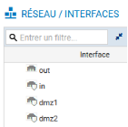
- Choisir une interface (par exemple IN), pour la sortir du bridge ou la configurer avec une IP fixe, les manipulations sont identiques.

Attention
Il s'agit ici d'une interface interne (protégée), le bouton radio correspondant doit être coché.
- Le cas échéant, cliquer dans la zone Plan d'adressage sur Dynamique/Statique.
- Cliquer Ip fixe (statique), un tableau apparaît :
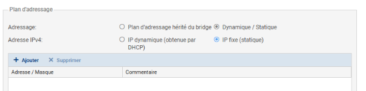
- Cliquer +Ajouter et dans la zone Adresse / Masque et saisir l'adresse IP de l'interface IN puis le masque en CIDR (/24 par exemple) ou en notation décimale pointée : 255.255.255.0.
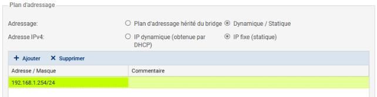
- Cliquer le bouton Appliquer puis Sauvegarder et à nouveau Sauvegarder.
Route par défaut
- Cliquer Configuration / Réseau / Routage / onglet Routes statiques IPv4.

- Cliquer sur
l'icône
 pour ajouter un objet réseau (cf. fiche 4 pour
plus de détails), choisir Machine et renseigner les champs
Nom (Ex : FW-Siege) et Adresse IPv4 du
pare-feu SNS Siège puis cliquer sur le bouton Créer.
pour ajouter un objet réseau (cf. fiche 4 pour
plus de détails), choisir Machine et renseigner les champs
Nom (Ex : FW-Siege) et Adresse IPv4 du
pare-feu SNS Siège puis cliquer sur le bouton Créer.
Par exemple :
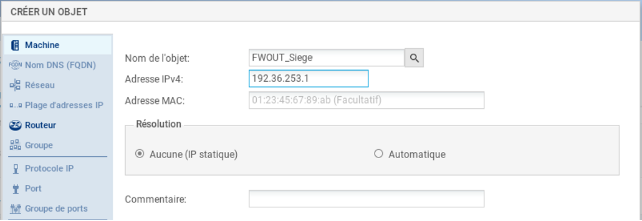
Il est bien sûr possible de procéder autrement en créant au préalable l'objet réseau. Il suffit ensuite de le sélectionner.
Configuration du proxy cache DNS
Le proxy cache DNS doit être activé pour permettre la résolution de noms DNS de façon correcte pour la mise en œuvre des activités (labs).
- Dans le volet Système / Configuration, ouvrez l'onglet Paramètres réseaux pour visualiser les options de configuration réseau du pare-feu.
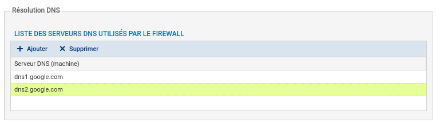
La liste des serveurs DNS utilisés par le pare-feu doit permettre la résolution DNS vers des serveurs de l'Internet, vous pouvez conserver les serveurs de google (par défaut) ou les remplacer par d'autres.
Le pare-feu intercepte les requêtes DNS à destination d'Internet, et effectue lui-même la requête vers le serveur DNS configuré. Si le nom demandé est dans son cache, le pare-feu répond directement à la demande selon les informations qu'il possède. Il est possible de configurer le proxy cache afin que le serveur DNS présent sur la DMZ puisse l'interroger.
- Dans le volet Configuration / Réseau, ouvrir Proxy cache DNS.
- Cliquer sur OFF pour activer le cache DNS, il passe à ON.
- Dans la « liste des clients autorisés à utiliser le cache DNS »,
cliquer + Ajouter puis cliquer sur l'icône
pour ajouter un objet Machine, dans Nom de
l'objet, saisir un nom (par exemple srv_dns_priv), dans
Adresse IPv4 saisir l'adresse du DNS puis Créer pour
l'ajouter puis Appliquer.
Politique de sécurité et NAT en bref
Le détail des différentes possibilités de paramétrage figure dans les fiches 5 et 6.
Dans les pare-feu SNS, les règles de filtrage et NAT (traduction d'adresses) sont regroupées sous une même politique. Il est possible de définir 10 politiques différentes mais une seule politique est active à la fois, identifiée par l'icône :
La politique de sécurité active en configuration usine est (1) Block all, elle n'autorise que le ping des interfaces du pare-feu et l'accès en https à l'administration du boîtier.
Une politique implicite Block all est également configurée sur le pare-feu SNS.
Pour modifier :
- Ouvrir le menu Configuration / Politique de sécurité / Filtrage et NAT.
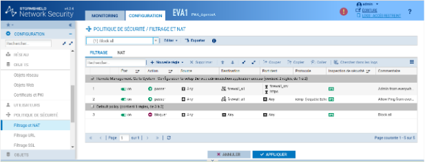{width="15.947cm" height="6.075cm"}
- Procéder aux modifications voulues (cf. fiche 6)
- Cliquer Sauvegarder les modifications.
Voici ci-dessus le résultat si on applique la dernière politique « Pass all ».
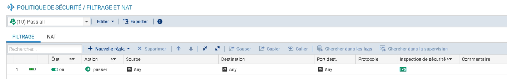
Pour ajouter une règle de NAT dynamique NAPT afin que les machines du réseau interne (Network_internals) puissent accéder au réseau externe (Network_Out) et à Internet
La règle de NAT dynamique est créée avec le bouton Nouvelle règle / règle de partage d'adresse source (masquerading) qui ajoute automatiquement la plage de ports prédéfinie ephemeral_fw [20000-59999] au niveau du port source dans le trafic après traduction. Par défaut, les ports sont choisis séquentiellement dans cette plage, cependant une option est disponible pour permettre un choix aléatoire du numéro de port pour chaque nouvelle connexion et le rendre ainsi moins prédictible.
- Dans votre politique (10), sélectionner l'onglet NAT puis Nouvelle règle / règle de partage d'adresse source (masquerading)
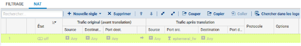
Une nouvelle règle non activée apparaît avec des valeurs par défaut any, any. Dans la section Trafic après translation, le port source sera traduit par un numéro de port choisi dans la plage ephemeral_fw.
La configuration du Trafic original (avant translation) permet de renseigner les valeurs des paramètres avant traduction (par défaut any, any) :
- Source permet de définir l'adresse IP d'un hôte ou du réseau source ;
- Destination permet de définir l'adresse IP d'un hôte ou du réseau destination.
La configuration du Trafic après translation permet de renseigner les nouvelles valeurs des paramètres après traduction (par défaut any, any) :
- Source définit l'adresse IP ou le réseau source et le port source vus de l'extérieur.
- Destination définit l'adresse IP ou le réseau destination et Port destination translatée le port de destination.
Pour configurer un NAT/PAT pour permettre la sortie sur Internet
- Double-cliquer sur une zone vide de la règle pour ouvrir la fenêtre de configuration détaillée « Edition de la règle N°1 ».
- Cliquer l'onglet du menu de gauche Général, dans la zone Commentaire, saisir un commentaire, par exemple « Configuration de la règle de NAT/PAT pour la sortie internet ».
- Cliquer sur l'onglet du menu de gauche Source Originale.
- Double-cliquer sur Any et avec la flèche choisir Network_internals (qui renvoie à tous les réseaux internes protégés), dans l'onglet Configuration avancée, laissez Any pour le port de destination.

- Cliquer sur l'onglet du menu de gauche Destination originale.
- Double-cliquer sur Any et avec la flèche choisir Internet, laissez Any pour le port de destination.
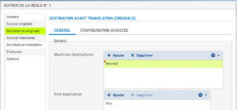
Vigilence
Attention : si dans la zone destination originale, vous laissez Any, plutôt qu'Internet qui désigne tous les réseaux sauf ceux internes au pare-feu SNS, le pare-feu SNS bloquera les flux d'administration (en ssh et en https). En effet, les flux d'administration subiront également une traduction NAT vers l'interface OUT qui l'interprétera comme une tentative d'intrusion et les bloquera.
Vigilence
Vous pouvez rendre cette règle plus restrictive en choisissant explicitement l'interface de sortie.
- Cliquer sur l'onglet Configuration avancée et sélectionnez out dans Interface de sortie.

- Cliquer sur l'onglet Source translatée et sélectionner Firewall_Out dans Machine source translatée.
- Dans Port source translaté, laisser ephemeral_fw et cocher choisir aléatoirement le port source translaté.
Vigilence
Cette option choisit aléatoirement le port source translaté, ce qui permet d'éviter les attaques utilisant la prédictibilité des ports utilisés. Ainsi si le premier port est 10000, le suivant ne sera pas 10001. Cette précaution n'empêche pas les attaques, elle permet de les rendre plus complexes.
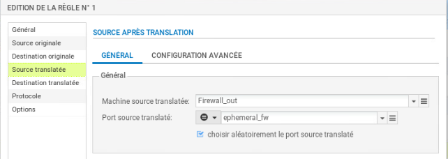
- Cliquer l'onglet du menu de gauche Protocole, cela permet de définir le type de protocole : applicatif, IP ou Ethernet, laisser Détection automatique du protocole (par défaut)

- Cliquer sur l'onglet du menu de gauche Options, cela permet de tracer le trafic qui correspond à la règle de traduction dans le journal de connexions, choisir tracer.
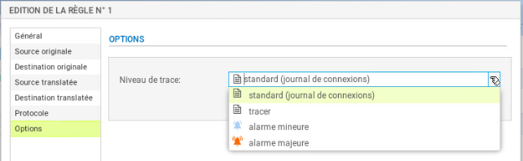
Information
NB : Le NAT ne laisse jamais de traces dans le journal de connexions. Pour tracer une règle de NAT, il faut choisir l'option « tracer », sinon, aucune journalisation de NAT ne sera effectuée.
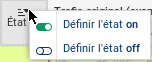
- Cliquer sur OK pour sauvegarder les modifications de la règle de NAT dynamique que vous venez de créer.
-
Dans la colonne État, sélectionner avec la flèche Définir l'état on
 La règle passe.
La règle passe. -
Cliquer sur Appliquer puis Oui, Activer la politique puis confirmer.
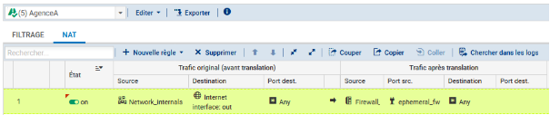
Pour gérer les statistiques d'utilisation
Dans la liste des règles la barre devient verte quand les règles s'appliquent et une info-bulle indique le nombre de fois où la règle a été appliquée :

Dans le bandeau d'affichage des règles, dépliez le menu
 cliquez sur Réinitialiser les statistiques des
règles pour remettre les compteurs à zéro.
cliquez sur Réinitialiser les statistiques des
règles pour remettre les compteurs à zéro.

Création de sous-interfaces pour la gestion des trames étiquetées (802.1q) et des VLAN
Vigilence
Lorsque le pare-feu doit également gérer le routage inter-vlan, il est nécessaire de créer à partir d'une interface physique des sous-interfaces à même d'interpréter des trames Ethernet étiquetées 802.1q en fonction des VLAN créés.
Si l'interface IN est celle utilisée pour se connecter à la page web d'administration du pare-feu mais également pour la création de sous-interfaces, il est indispensable d'avoir un accès à cette même application par une autre interface telle que DMZ. Sans cela, il ne sera plus possible de se connecter au pare-feu pour l'administrer.
Vigilence
La désactivation de l'interface parent peut se faire dans un second temps une fois que les interfaces virtuelles sont configurées.
Pour créer une sous-interface, il est nécessaire de se rendre dans le menu Configuration / Réseau / Interfaces.
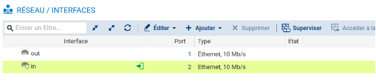
Contrairement à la création de sous-interfaces sur des routeurs Cisco qui consiste à activer l'interface réseau physique sans lui attribuer de configuration IP, Stormshield recommande de désactiver 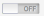 l'interface parente qui servira à la création des sous-interfaces associées à chaque VLAN :
- double-cliquer sur l'interface physique concernée par le routage inter-vlan (in la plupart du temps) puis dans l'onglet Configuration Générale pour la désactiver, passer l'Etat à Off.
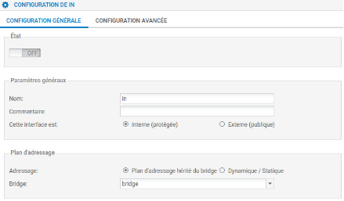
- Sélectionner ensuite l'interface physique que vous venez de désactiver puis cliquer sur Ajouter / VLAN / Pour in (ou toute autre interface concernée).
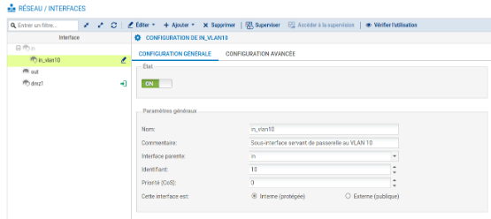
- Définir un nom pour la sous-interface en respectant une convention de nommage cohérente puis un commentaire permettant d'expliciter l'utilité de celle-ci.
- Le cas échéant, choisir l'interface parente correspondante et définir un identifiant correspondant au VID du VLAN concerné (10, 100, 200...).
- Cette sous-interface est interne puisque les VLAN sont très souvent implémentés sur le réseau local de l'entreprise.